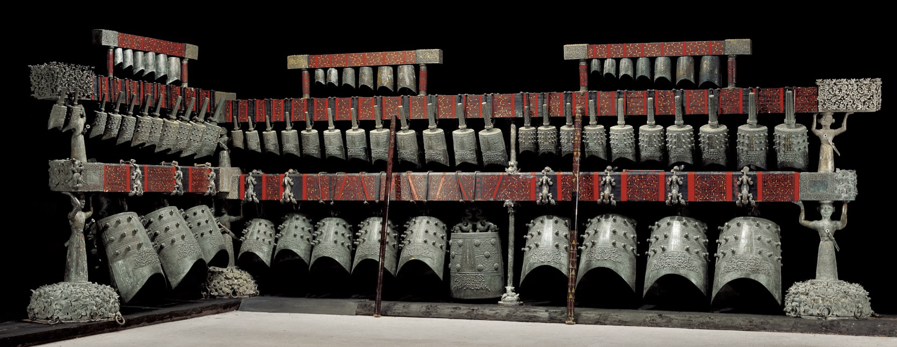

礼乐之器 / THE ART OF RESONANCE
钟鸣千年
从一声青铜的回响，走进荆楚。

正在迎入编钟载入三维模型…
曾侯乙编钟复制件实录 · 演示配声战国早期 · 约公元前 433 年
听一曲古乐
点击曲名，编钟依次奏响
正在准备曲谱
曾侯乙编钟 / THE CHIMES OF ZENG HOU YI
有声的青铜。
1978 年，这套编钟出土于湖北随州擂鼓墩 1 号墓。大小不同的钟排列在曲尺形钟架上，青铜与朱漆共同构成它的形与色。
每件钟的合瓦形钟体能够发出两个不同的音。器物的造型、纹饰与铭文，记录着战国时代对声音的理解。
65件编钟
3层钟架
1978年出土
三维模型：用户提供的 Tripo 生成模型，细节以文物资料为准。文物资料：湖北省博物馆 / Google 艺术与文化。
查看馆方资料 ↗编钟复制件实录演示配声，音色与模型位置作演示配对。
查看编钟实录来源 ↗ · CC BY 4.0